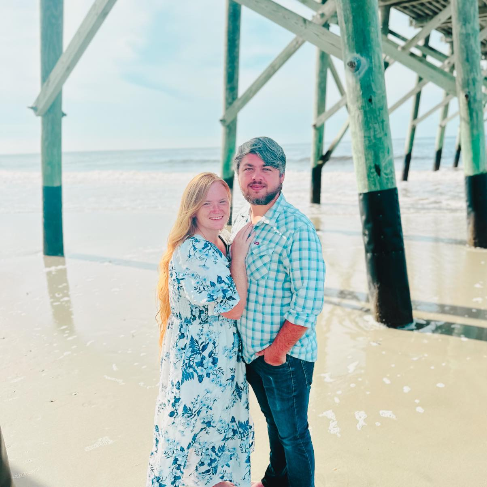
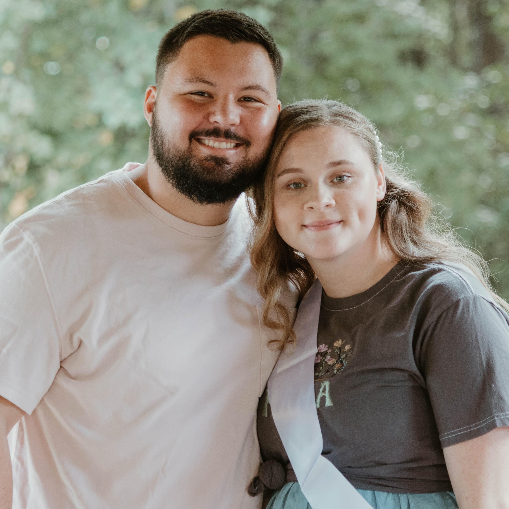
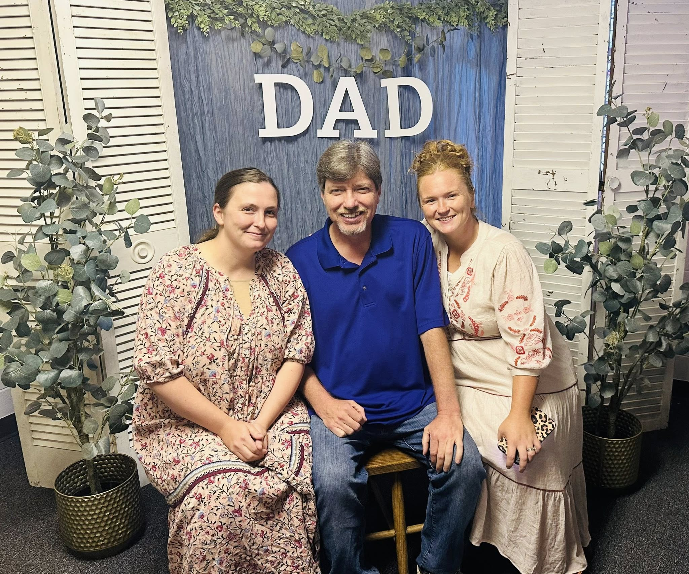

Who We Are
Faith Revival Church is a nondenominational church who believes in being the hands and feet of Jesus. We believe in the freedom to worship, the unity of the body of Christ, and that God's Spirit is alive and working miracles today.
Our Leadership Team
Pastors

Anthony & Erica Miller
Anthony and Erica have been pastors at Faith Revival Church since 2023. They have a burden for the people of the church and their goal is to reach the lost. They have made tremendous strides towards spreading the reach of the church to help the community, homeless, forgotten, and constantly try to support other churches.
Youth Minister Ages 2-5

Brennon & Nita Powers
Brennon and Nita have been youth ministers at Faith Revival since 2023. They teach the youngest children in the church
Youth Ministers
Isaac & Lacy Lancaster
A short paragraph about the youth minister...
Outreach Coordinator

Dallas Adams
A short paragraph detailing the outreach coordinator's role...
Get Involved
Upcoming Events
Check out the calendar for services, gatherings, and special events.
Ministries
Check out the ministries of Faith Revival Church.
Youth Ministry
A fun and engaging space for students to grow in their faith and connect.
Monthly Outreach
Join us as we serve our local community and make a difference together.
Join Us This Sunday
Experience powerful worship and a life-changing message.
Plan Your VisitContact Us
Service Times: Saturday and Wednesday at 7:00 PM
Phone: (229) 507-6024
Email: contact@faithrevival.com
Address: 10 Faith Revival Lane, Hiddenite, NC